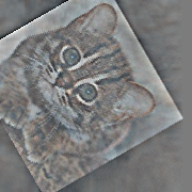
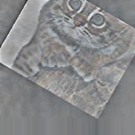
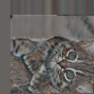

Functionality of the OpenImageR package
Lampros Mouselimis
2023-04-21
Source:vignettes/The_OpenImageR_package.Rmd
The_OpenImageR_package.RmdThe following notes and examples illustrate the image processing functions of the OpenImageR package.
Basic functions
readImage
The readImage function reads images from a variety of types such as ‘png’, ‘jpeg’, ‘jpg’ or ‘tiff’,
library(OpenImageR)
path = file.path(getwd(), 'vignette_1', 'image1.jpeg')
im = readImage(path)
dim(im)## [1] 496 487 3imageShow
The imageShow function utilizes either a shiny application
(if the image is a character path) or the grid.raster function of the
base grid package (if the image is a 2- or 3-dimensional object where
the third dimension is equal to 3) to display images,
imageShow(im)
writeImage
The writeImage function writes a 2- or 3-dimensional object
(matrix, data frame or array where the third dimension is equal to 3) in
a user specified image format. The supported types are .png, .jpeg,
.jpg, .tiff.
writeImage(im, file_name = 'my_image.jpeg')rgb_2gray
To convert an image from RGB to gray one can use the
rgb_2gray function, which takes a single argument (matrix, data
frame or array),


cropImage
The cropImage function reduces the size of the image
horizontally and vertically. The function takes four arguments :
image (2- or 3-dimensional object where the third dimension is
equal to 3), new_width (the desired new width),
new_height (the desired new height) and type. While
the type ‘equal_spaced’ crops the image equally in both
directions (horizontal, vertical) towards the center of the image, the
type ‘user_defined’ allows the user to specify which regions of
the image should be kept

us_def = cropImage(im, new_width = 20:225, new_height = 5:185, type = 'user_defined')
imageShow(us_def)
flipImage
A flipped
image (or reversed image) is a static or moving image that is
generated by a mirror-reversal of an original across a horizontal axis
(a flopped image is mirrored across the vertical axis). The first image
shows the original image and the second one a horizontal flip,


rotateFixed
The rotateFixed function rotates an image by specific angles
(90, 180, 270). I added this function (besides the rotateImage
function) in the package, because it takes less time to return the
output,
r270 = rotateFixed(im, 270)
imageShow(r270)
rotateImage
The rotateImage function is more flexible in comparison to
the rotateFixed function. It allows the user to rotate an image
by a specific angle (between 0 and 360 degrees) using either the
‘nearest’ or the ‘bilinear’ interpolation method,
r45 = rotateImage(im, 45, threads = 1)
imageShow(r45)
resizeImage
The resizeImage function takes advantage of two different
interpolation methods ( nearest neighbors, bilinear ) to either down- or
upsample an image,
path = file.path(getwd(), 'vignette_1', 'image2.jpg')
im = readImage(path)
intBl = resizeImage(im, width = 100, height = 100, method = 'bilinear', normalize_pixels = TRUE)
imageShow(intBl)
It is known that resizing an image using bilinear interpolation gives
better results, however the nearest neighbors method is faster.
A further option to resize an image is by using
gaussian_blur ( down-sampling gives better results than
up-sampling that’s why is the only option in the OpenImageR package ),
intGbl = down_sample_image(im, factor = 2.5, gaussian_blur = T)
imageShow(intGbl)
The factor of the function applies equally to the horizontal and
vertical dimensions of the image.
translation
translation is the shifting of an object’s location by adding/subtracting a value to/from the X or Y coordinates,
tr = translation(im, shift_rows = 50, shift_cols = -50)
imageShow(tr)
Image filtering
edge_detection
According to Wikipedia, edge detection is the name for a set of
mathematical methods which aim at identifying points in a digital image
at which the image brightness changes sharply or, more formally, has
discontinuities. The edge_detection function uses one of the
Frei_chen, LoG (Laplacian of Gaussian),
Prewitt, Roberts_cross, Scharr or
Sobel filters to perform edge detection,
path = file.path(getwd(), 'vignette_1', 'image1.jpeg')
im = readImage(path)
edsc = edge_detection(im, method = 'Scharr', conv_mode = 'same')
imageShow(edsc)
uniform_filter
In a uniform filter all the values within the filter (kernel) have the same weight,
kernel_size = c(4,4)
unf = uniform_filter(im, size = kernel_size, conv_mode = 'same')
unif_filt = matrix(1, ncol = kernel_size[1], nrow = kernel_size[2])/(kernel_size[1] * kernel_size[2])
unif_filt## [,1] [,2] [,3] [,4]
## [1,] 0.0625 0.0625 0.0625 0.0625
## [2,] 0.0625 0.0625 0.0625 0.0625
## [3,] 0.0625 0.0625 0.0625 0.0625
## [4,] 0.0625 0.0625 0.0625 0.0625image_thresholding
According to Wikipedia, thresholding is the simplest method of image segmentation. From a grayscale image, thresholding can be used to create binary images,
path = file.path(getwd(), 'vignette_1', 'image2.jpg')
im = readImage(path)
thr = image_thresholding(im, thresh = 0.5) # if the input image is 3-dimensional it will be converted internally to a matrix
imageShow(thr)gamma_correction
Gamma correction, or often simply gamma, is the name of a nonlinear operation used to encode and decode luminance or tristimulus values in video or still image systems (Wikipedia),
gcor = gamma_correction(im, gamma = 2) # show image with gamma correction
imageShow(gcor)
ZCAwhiten
Whitening (or sphering) is the preprocessing needed for some algorithms. If we are training on images, the raw input is redundant, since adjacent pixel values are highly correlated. The purpose of whitening is to reduce the correlation between features and to return features with the same variance,

dilationErosion
Dilation and erosion are the most basic morphological operations. Dilation adds pixels to the boundaries of objects in an image, while erosion removes pixels on object boundaries,
res_delate = dilationErosion(im, Filter = c(8,8), method = 'dilation')
imageShow(res_delate)
res_erosion = dilationErosion(im, Filter = c(8,8), method = 'erosion')
imageShow(res_erosion)
Augmentation
Augmentations are specific transformations applied to an image. The Augmentation function allows the user to flip, crop, resize, shift, rotate, zca-whiten and threshold an image. It either returns a single image,
## [1] 496 487 3
augm = Augmentation(im, flip_mode = 'horizontal', crop_width = 20:460, crop_height = 30:450,
resiz_width = 180, resiz_height = 180, resiz_method = 'bilinear',
shift_rows = 0, shift_cols = 0, rotate_angle = 350,
rotate_method = 'bilinear', zca_comps = 100,
zca_epsilon = 0.1, image_thresh = 0.0, verbose = T)##
## time to complete : 0.1171021 secs
imageShow(augm)
or multiple transformed images using either pre-specified or random parameters (here I utilized the lapply function),
# random rotations
samp_rot = sample(c(seq(5, 90, 30), seq(270, 350, 30)), 3, replace = F)
# random shift of rows
samp_shif_rows = sample(seq(-50, 50, 10), 3, replace = F)
# random shift of columns
samp_shif_cols = sample(seq(-50, 50, 10), 3, replace = F)
res = lapply(1:length(samp_rot), function(x)
Augmentation(im, flip_mode = 'horizontal', crop_width = 20:460, crop_height = 30:450,
resiz_width = 180, resiz_height = 180, resiz_method = 'bilinear',
shift_rows = samp_shif_rows[x], shift_cols = samp_shif_cols[x],
rotate_angle = samp_rot[x], rotate_method = 'bilinear', zca_comps = 100,
zca_epsilon = 0.1, image_thresh = 0.0, verbose = F))
print(length(res))## [1] 3
imageShow(res[[1]])
imageShow(res[[2]])
imageShow(res[[3]])
Image recognition
HOG ( histogram of oriented gradients )
The histogram of oriented gradients (HOG) is a feature descriptor
used in computer vision and image processing for the purpose of object
detection. The technique counts occurrences of gradient orientation in
localized portions of an image. This method is similar to that of edge
orientation histograms, scale-invariant feature transform descriptors,
and shape contexts, but differs in that it is computed on a dense grid
of uniformly spaced cells and uses overlapping local contrast
normalization for improved accuracy (Wikipedia).
The HOG function of the OpenImageR package is a modification
and extention of the findHOGFeatures
function ( SimpleCV computer vision platform ), please, consult the
COPYRIGHT file.
The purpose of the function is to create a vector of HOG descriptors, which can be used in classification tasks. It takes either RGB (they will be converted to gray) or gray images as input,
path = file.path(getwd(), 'vignette_1', 'image2.jpg')
image = readImage(path)
image = image * 255
hog = HOG(image, cells = 3, orientations = 6)
hog## [1] 0.77469214 1.14086503 2.31889250 1.23273279 2.11969315 2.18888603
## [7] 0.98545254 2.01819644 1.45363031 1.57426901 1.30780262 1.46335968
## [13] 2.02599281 1.34299739 0.67503592 2.00988275 1.17642965 0.45404311
## [19] 1.88303677 0.84543358 0.91915814 1.57235148 1.63834676 0.71412684
## [25] 1.02893068 2.34523001 1.87588867 1.29156373 3.25841836 1.45814321
## [31] 0.72214449 1.31669539 2.11007710 0.69881074 0.44783304 1.65003799
## [37] 0.47865256 0.43020737 0.30637683 0.15287033 0.88481912 0.25718794
## [43] 0.49127802 0.29067277 0.17552517 0.09544067 0.25962132 0.48733020
## [49] 0.52154428 0.61910760 0.03944711 0.05271813 0.04068158 0.15660130HOG_apply
The HOG_apply function uses the previous mentioned HOG function to return the HOG-descriptors for the following objects :
- a matrix of images such as the mnist data set, where each row represents a different digit (28 x 28 image)
- an array, where each slice represents a different image
- a folder of images where each file is a different image
In the following code chunk I’ll apply the HOG function to an array of images. The result is a matrix, where each row respresents the HOG-descriptors for each array slice (image),
path_im1 = file.path(getwd(), 'vignette_1', 'image1.jpeg')
path_im2 = file.path(getwd(), 'vignette_1', 'image2.jpg')
tmp_im1 = readImage(path_im1)
tmp_im2 = readImage(path_im2)
tmp_im1 = resizeImage(tmp_im1, 200, 200, normalize_pixels = TRUE)
tmp_im2 = resizeImage(tmp_im2, 200, 200, normalize_pixels = TRUE)
tmp_gray1 = rgb_2gray(tmp_im1)
tmp_gray2 = rgb_2gray(tmp_im2)
dim(tmp_gray2)## [1] 200 200
tmp_arr = array(0, c(nrow(tmp_gray1), ncol(tmp_gray1), 2))
tmp_arr[,,1] = tmp_gray1
tmp_arr[,,2] = tmp_gray2
res = HOG_apply(tmp_arr, cells = 2, orientations = 3)##
## time to complete : 0.01502299 secs
res## [,1] [,2] [,3] [,4] [,5] [,6]
## [1,] 0.03483613 0.04196114 0.04612695 0.04140325 0.04309913 0.04109847
## [2,] 0.02451697 0.03900987 0.03382551 0.02726853 0.03312162 0.02102826
## [,7] [,8] [,9] [,10] [,11] [,12]
## [1,] 0.03420407 0.03928073 0.04142536 0.03453907 0.02951086 0.02247319
## [2,] 0.01256165 0.01003306 0.01500769 0.01639543 0.01053641 0.01457517image hashing
The image hashing functions (average_hash, dhash, phash, invariant_hash, hash_apply) of the OpenImageR package are implemented in the way perceptual hashing works. Perceptual hashing is the use of an algorithm that produces a fingerprint of images (in OpenImageR those fingerprints are binary features or hexadecimal hashes). The difference between cryptographic and image hashing is that the latter tries to find similar and not exact matches. In cryptographic hashing small differences of the hashes lead to entirely different output, which is not the case for perceptual hashing. A practical application of image hashing would be to compare a database of already created image hashes with a new hash (image) to find similar images in the database.
The average_hash, dhash and phash
functions of the OpenImageR package are modifications and extentions of
the ImageHash
python library, please, consult the COPYRIGHT file.
average_hash
The average hash algorithm of the OpenImageR package works in the following way : 1st we convert to grayscale, 2nd we reduce the size of an image (for instance to an 8x8 image), 3rd we average the resulting colors (for an 8x8 image we average 64 colors), 4th we compute the bits by comparing if each color value is above or below the mean and 5th we construct the hash. The result of the average_hash function can be either a hexadecimal hash (string) or binary features,

image = rgb_2gray(image)
aveg_hash = average_hash(image, hash_size = 8, MODE = 'hash', resize = "bilinear")
aveg_hash## [1] "ffffffde08000000"
aveg_bin = average_hash(image, hash_size = 8, MODE = 'binary', resize = "bilinear")
as.vector(aveg_bin)## [1] 1 1 1 1 1 1 1 1 1 1 1 1 1 1 1 1 1 1 1 1 1 1 1 1 0 1 1 1 1 0 1 1 0 0 0 1 0 0
## [39] 0 0 0 0 0 0 0 0 0 0 0 0 0 0 0 0 0 0 0 0 0 0 0 0 0 0phash
While the average_hash is fast, it can generate false-misses if there is a gamma correction or a color histogram is applied to the image. The phash algorithm extends the average_hash by using the discrete cosine transform to reduce the frequencies,

image2 = rgb_2gray(image2)
ph_hash = phash(image2, hash_size = 8, highfreq_factor = 4, MODE = 'hash', resize = "bilinear")
ph_hash## [1] "5b63ecacb1a258c9"
ph_bin = phash(image2, hash_size = 8, highfreq_factor = 4, MODE = 'binary', resize = "bilinear")
as.vector(ph_bin)## [1] 1 1 0 1 1 0 1 0 1 1 0 0 0 1 1 0 0 0 1 1 0 1 1 1 0 0 1 1 0 1 0 1 1 0 0 0 1 1
## [39] 0 1 0 1 0 0 0 1 0 1 0 0 0 1 1 0 1 0 1 0 0 1 0 0 1 1dhash
In comparison to average_hash and phash, the dhash algorithm takes into consideration the difference between adjacent pixels. In the same way as with the average_hash, the resulting hash won’t change if the image is scaled or the aspect ratio changes. Increasing or decreasing the brightness or contrast, or even altering the colors won’t dramatically change the hash value. Even complex adjustments like gamma corrections and color profiles won’t impact the result,

image3a = rgb_2gray(image3)
dh_hash = dhash(image3a, hash_size = 8, MODE = 'hash', resize = "bilinear")
dh_hash## [1] "57d49449a2d71d6a"## [1] 1 1 1 0 1 0 1 0 0 0 1 0 1 0 1 1 0 0 1 0 1 0 0 1 1 0 0 1 0 0 1 0 0 1 0 0 0 1
## [39] 0 1 1 1 1 0 1 0 1 1 1 0 1 1 1 0 0 0 0 1 0 1 0 1 1 0By adding a gamma correction we can check if the hash value or the binary features of the view3.jpg will be altered,
tmp_image3 = gamma_correction(image3, gamma = 0.5)
imageShow(tmp_image3)
tmp_image3 = rgb_2gray(tmp_image3)
dh_hash_a = dhash(tmp_image3, hash_size = 8, MODE = 'hash', resize = "bilinear")
dh_hash_a## [1] "57d49449a2d71d6a"
dh_bin_a = dhash(tmp_image3, hash_size = 8, MODE = 'binary', resize = "bilinear")
as.vector(dh_bin_a)## [1] 1 1 1 0 1 0 1 0 0 0 1 0 1 0 1 1 0 0 1 0 1 0 0 1 1 0 0 1 0 0 1 0 0 1 0 0 0 1
## [39] 0 1 1 1 1 0 1 0 1 1 1 0 1 1 1 0 0 0 0 1 0 1 0 1 1 0invariant_hash
invariant_hash is an extension function for image
hashing. It takes two images as input (image1, image2) and by altering
one of those (random flipping, rotating and cropping) it calculates the
hamming distance (if the mode is ‘binary’) or the
levenshtein distance if (the mode is ‘hash’). If any of the
flip, rotate, crop equals TRUE then the
function returns the MIN,MAX similarity between the two images. If, on
the other hand all flip, rotate, crop equal
FALSE then a single similarity value is returned meaning no random
transformations of the second image are performed.
Although, in the previous example the gamma correction doesn’t influence the dhash of the view3.jpg, a horizontal flip of the image would change both the hash value and the binary features considerably,

image3b = rgb_2gray(image3b)
dh_hash_b = dhash(image3b, hash_size = 8, MODE = 'hash', resize = "bilinear")
dh_hash_b## [1] "0a2a6b365d9a23d4"## [1] 0 1 0 1 0 0 0 0 0 1 0 1 0 1 0 0 1 1 0 1 0 1 1 0 0 1 1 0 1 1 0 0 1 0 1 1 1 0
## [39] 1 0 0 1 0 1 1 0 0 1 1 1 0 0 0 1 0 0 0 0 1 0 1 0 1 1By using the invariant hash in this case with all the available transformations (at the cost of computational time) we can obtain minimum and maximum values for the hamming or the levenshtein distance,
inv_hash = invariant_hash(image3a, image3b, mode = 'binary', flip = T, rotate = T,
angle_bidirectional = 10, crop = T)
inv_hash## min max
## 1 0 0.53125
inv_bin = invariant_hash(image3a, image3b, mode = 'hash', flip = T, rotate = T,
angle_bidirectional = 10, crop = T)
inv_bin## min max
## 1 0 15In both cases (hash, binary) a minimum value of 0 indicates perfect matches between the two images among the transfomations.
hash_apply
The hash_apply function applies the single average_hash, phash, dhash to either a matrix, array or folder of images. This function is practical in case of a matrix of images such as the mnist, or the cifar_10 data sets, where each line of the matrix corresponds to an image. Furthermore, if a folder includes many images, then the hexadecimal hash mode should be prefered, as it doesn’t require as much storage space as the binary mode. The following example illustrates how hash values and binary features can be computed from a folder of images,
path = paste0(getwd(), '/TEST_hash/')
hapl_hash = hash_apply(path, hash_size = 6, method = "dhash", mode = "hash", threads = 1, resize = "nearest")##
## time to complete : 0.01312399 secs
hapl_hash # returns both the names of the images and the hash values## $files
## [1] "2_1.png" "2_2.png" "2_3.png" "4_1.png" "4_2.png" "4_3.png" "5_1.png"
## [8] "5_2.png" "5_3.png" "8_1.png" "8_2.png" "8_3.png" "9_1.png" "9_2.png"
## [15] "9_3.png"
##
## $hash
## [1] "00008130" "00008130" "00008130" "0080a020" "0080a020" "0080a020"
## [7] "00006330" "00006330" "00006330" "0080a230" "0080a230" "0080a230"
## [13] "4010a769" "4010a769" "4010a769"
hapl_bin = hash_apply(path, hash_size = 6, method = "dhash", mode = "binary", threads = 1, resize = "nearest")##
## time to complete : 0.01187897 secs
hapl_bin$files # names of the images## [1] "2_1.png" "2_2.png" "2_3.png" "4_1.png" "4_2.png" "4_3.png" "5_1.png"
## [8] "5_2.png" "5_3.png" "8_1.png" "8_2.png" "8_3.png" "9_1.png" "9_2.png"
## [15] "9_3.png"
dim(hapl_bin$hash) # dimensions of the resulted matrix## [1] 15 36
head(hapl_bin$hash) # binary features## [,1] [,2] [,3] [,4] [,5] [,6] [,7] [,8] [,9] [,10] [,11] [,12] [,13] [,14]
## [1,] 0 0 0 0 0 0 0 0 0 0 0 0 0 0
## [2,] 0 0 0 0 0 0 0 0 0 0 0 0 0 0
## [3,] 0 0 0 0 0 0 0 0 0 0 0 0 0 0
## [4,] 0 0 0 0 0 0 0 0 0 0 0 0 0 0
## [5,] 0 0 0 0 0 0 0 0 0 0 0 0 0 0
## [6,] 0 0 0 0 0 0 0 0 0 0 0 0 0 0
## [,15] [,16] [,17] [,18] [,19] [,20] [,21] [,22] [,23] [,24] [,25] [,26]
## [1,] 0 0 1 0 0 0 0 0 0 1 0 0
## [2,] 0 0 1 0 0 0 0 0 0 1 0 0
## [3,] 0 0 1 0 0 0 0 0 0 1 0 0
## [4,] 0 1 0 0 0 0 0 1 0 1 0 0
## [5,] 0 1 0 0 0 0 0 1 0 1 0 0
## [6,] 0 1 0 0 0 0 0 1 0 1 0 0
## [,27] [,28] [,29] [,30] [,31] [,32] [,33] [,34] [,35] [,36]
## [1,] 0 0 1 1 0 0 1 1 0 1
## [2,] 0 0 1 1 0 0 1 1 0 1
## [3,] 0 0 1 1 0 0 1 1 0 1
## [4,] 0 0 0 1 0 0 0 0 0 1
## [5,] 0 0 0 1 0 0 0 0 0 1
## [6,] 0 0 0 1 0 0 0 0 0 1